Staff interface
Get there: More > Administration > Global system preferences > Staff interface
Appearance
Display856uAsImage
Asks: Display the URI in the 856u field as an image on: ___
Values:
- Both results and details pages
注解
Both XSLTDetailsDisplay and XSLTResultsDisplay need to have values in order for this option to work.
警告
This option is only implemented for MARC21.
- Detail page only
注解
XSLTDetailsDisplay needs to have a value in it for this option to work.
警告
This is only implemented for MARC21 and UNIMARC.
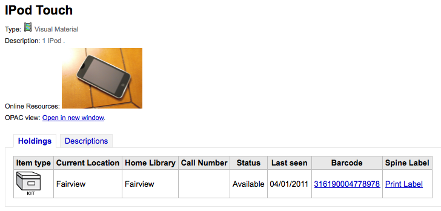
- Neither details or results page
- Results page only
注解
XSLTResultsDisplay needs to have a value in it for this option to work.
警告
This is only implemented for MARC21 and NORMARC.
Default: Neither details or results page
Description:
In addition to this option being set, the corresponding XSLT option must be turned on.
See
Also, the corresponding 856q field must have a valid MIME image extension (e.g., “jpg”) or MIME image type (i.e. starting with “image/”), or the generic indicator “img” entered in the field.
注解
Common image MIME types
| File type | Image MIME type | File extension |
|---|---|---|
| Bitmap | image/bmp | bmp |
| Graphic interchange format (gif) | image/gif | gif |
| JPEG image | image/jpeg | jpg |
| JPEG image | image/jpeg | jpeg |
| Scalable vector graphic | image/svg+xml | svg |
| TIF image | image/tiff | tiff |
| TIF image | image/tiff | tif |
When all of the requirements are met, an image file will be displayed instead of the standard link text. Clicking on the image will open it in the same way as clicking on the link text. When you click on the image it should open to full size, in the current window.

See also
DisplayIconsXSLT
Asks: ___ the format, audience, and material type icons and descriptions in XSLT MARC21 results and detail pages in the staff interface.
Values:
- Don’t show
- Show
Default: Show
Description:
This preference enables or disables the display of icons based on coded values in the leader of bibliographic records.
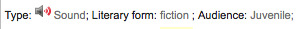
注解
See the XSLT material type icons for more information on these icons.
警告
This is only used in XSLT displays, so XSLTResultsDisplay and/or XSLTDetailsDisplay must be set to use an XSLT stylesheet for this to show (default or custom)
See also:
intranet_includes
Asks: Use include files from the ___ directory in the template directory, instead of includes/. (Leave blank to disable)
Default: includes
Description:
- This system preference lets you modify the directory for include files, should you want to use files that are not the standard ones.
IntranetCirculationHomeHTML
Asks: Show the following HTML in its own div on the bottom of the home page of the circulation module
Description:
This system preference lets you add content to the circulation home page. You can add links, memos or any other content.
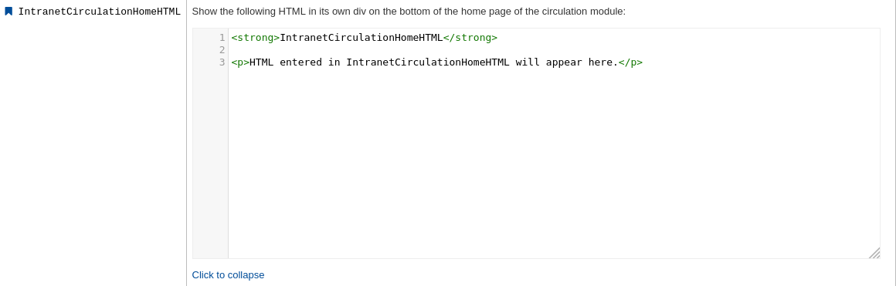
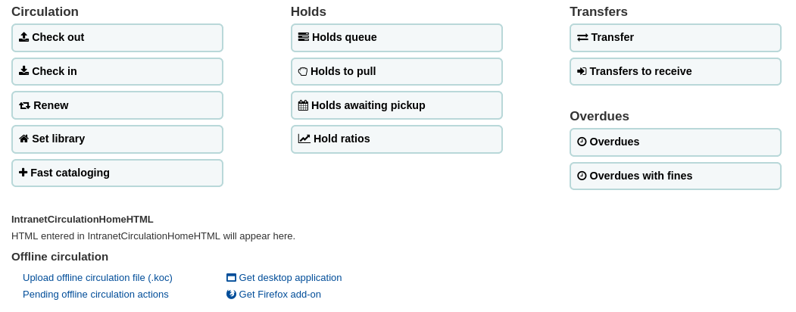
See also:
intranetcolorstylesheet
Asks: Include the additional CSS stylesheet ___ to override specified settings from the default stylesheet
Description:
- This preference is used to set custom CSS settings to the staff interface.
- The value is a .css file. If you only need to add some directives, not necessarily a whole file, use IntranetUserCSS
- Enter just a filename, a full local path or a complete URL starting with http:// (if the file lives on a remote server). Please note that if you just enter a filename, the file should be in the css subdirectory for each active theme and language within the Koha templates directory. A full local path is expected to start from your HTTP document root.
- Leave this field blank to disable.
注解
The stylesheet entered here will be used in addition to the default staff interface CSS stylesheet.
See also:
IntranetFavicon
Asks: Use the image at ___ for the staff interface’s favicon.
注解
This should be a complete URL, starting with http://
注解
Turn your logo into a favicon with the Favicon Generator.
Description:
The favicon is the little icon that appears next to the page name on the browser tab in most browsers. The default value for this field (if left blank) is the small ‘K’ in the Koha logo.
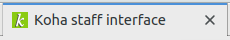
See also:
IntranetmainUserblock
Asks: Show the following HTML in its own column on the main page of the staff interface
Description:
- This system preference lets you add content to the main staff interface page. You can add links, memos or any other content.
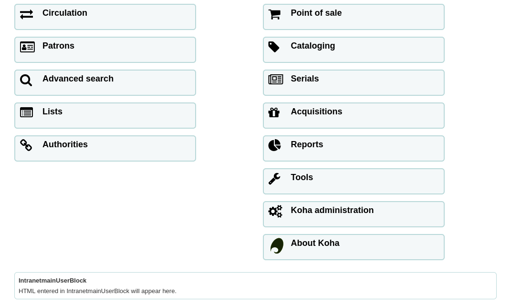
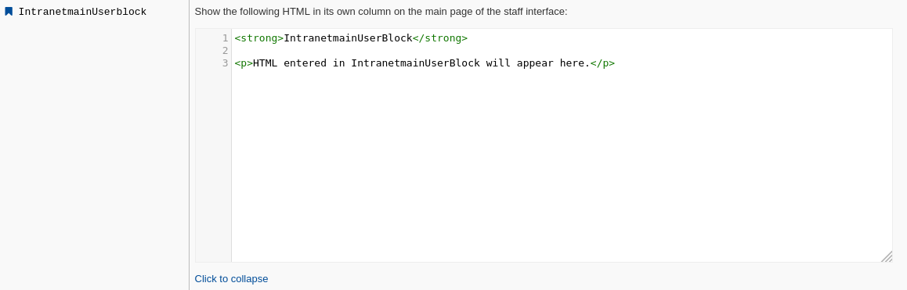
See also:
IntranetReportsHomeHTML
Asks: Show the following HTML in its own div on the bottom of the home page of the reports module
Description:
This system preference lets you add content to the reports home page. You can add links, memos or any other content.
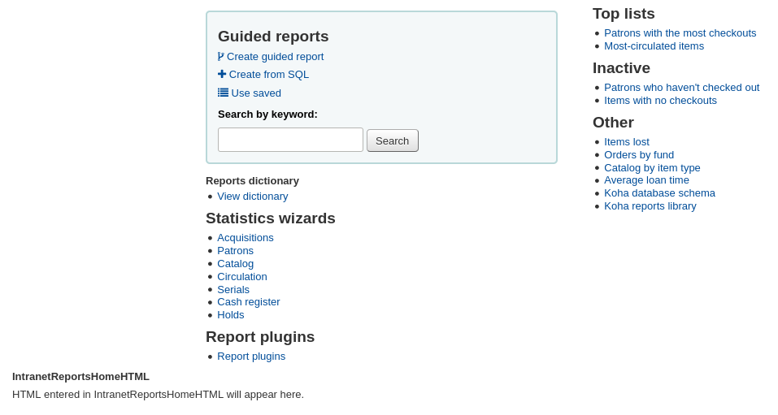
See also:
IntranetSlipPrinterJS
Asks: Use the following JavaScript for printing slips.
Description:
- The most logical use of this preference is in conjunction with the jsPrintSetup Firefox add-on.
- Learn more about this preference and the add-on setup on the Koha wiki at http://wiki.koha-community.org/wiki/Setting_up_slip_printer_to_print_silently.
See also:
intranetstylesheet
Asks: Use the CSS stylesheet ___ on all pages in the staff interface, instead of the default css (used when leaving this field blank).
Description:
- This preference allows a library to customize the appearance of the staff interface.
- The value is a .css file. This new file will override the default stylesheet.
- Enter just a filename, a full local path or a complete URL starting with http:// (if the file lives on a remote server). Please note that if you just enter a filename, the file should be in the css subdirectory for each active theme and language within the Koha templates directory. A full local path is expected to start from your HTTP document root.
- Leave this field blank to disable.
警告
The stylesheet entered here will be used instead of the default staff interface CSS stylesheet.
If you’d rather use the default staff interface CSS, but add your own personal touch, see intranetcolorstylesheet.
See also:
IntranetUserCSS
Asks: Include the following CSS on all pages in the staff interface
Description:
- This system preference lets you add some CSS directives to customize the appearance of the staff interface.
- The value is CSS code. If you have a .css file ready, use intranetcolorstylesheet or intranetstylesheet instead.
注解
The CSS code entered here will be used in addition to the default staff interface CSS stylesheet.
See also:
IntranetUserJS
Asks: Include the following JavaScript on all pages in the staff interface
Description:
- This preference allows the administrator to enter JavaScript or JQuery that will be embedded across all pages of the staff interface.
- Administrators may use this preference to customize some of the interactive sections of Koha, customizing the text for the login prompts, for example.
- Sample JQuery scripts used by Koha libraries can be found on the wiki: http://wiki.koha-community.org/wiki/JQuery_Library.
See also:
SlipCSS
Asks: Include the stylesheet at ___ on issue and hold slips.
Description:
- If you would like to style your receipts or slips with a consistent set of fonts and colors you can use this preference to point Koha to a stylesheet specifically for your slips.
- This should be a complete URL, starting with http://
See also:
staffClientBaseURL
Asks: The staff interface is located at ___
Description:
- Enter the staff interface URL
- This should be a complete URL, starting with http:// or https://. Do not include a trailing slash in the URL.
警告
This must be filled in correctly for CAS, svc, and load_testing to work.
See also:
StaffLangSelectorMode
Asks: Display language selector on ___
Values:
- both top and footer
- only footer
- top
Default: only footer
Description:
- If your staff interface is available in more than one language, you can choose where the laguage switch is located
See also:
StaffLoginInstructions
Asks: Show the following HTML on the staff interface login page
Description:
- HTML entered in this field will appear above the login form of your staff client
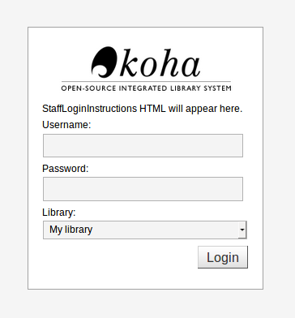
See also:
template
Asks: Use the ___ theme on the staff interface.
Values:
- prog
Default: prog
Description:
- This system preference is used to choose the theme for the staff interface.
- There is currently only one theme that comes with Koha, prog.
XSLTDetailsDisplay
Asks: Display details in the staff client using XSLT stylesheet at ___
Values:
- enter “default” for the default one
- put a path to define a XSLT file
- ex: /path/to/koha/and/your/stylesheet.xsl
- If in a multi-language system you can enter {langcode} in the path
to tell Koha to look in the right language folder
- ex: /home/koha/src/koha-tmpl/intranet-tmpl/prog/{langcode}/xslt/intranetDetail.xsl
- ex. http://mykoha.org/{langcode}/stylesheet.xsl
- put an URL for an external specific stylesheet
Default: default
Description:
- XSLT stylesheets allow for the customization of the details shown on the screen when viewing a bibliographic record. This preference will allow you either use the default look that comes with Koha or design your own stylesheet.
- This system preference controls the display of the detailed bibliographic record
See also:
XSLTListsDisplay
Asks: Display lists in the staff interface using XSLT stylesheet at ___
Values:
- leave empty to not use the XSLT stylesheet
- enter “default” for the default one
- put a path to define a XSLT file
- ex: /path/to/koha/and/your/stylesheet.xsl
- If in a multi-language system you can enter {langcode} in the path
to tell Koha to look in the right language folder
- ex: /home/koha/src/koha-tmpl/intranet-tmpl/prog/{langcode}/xslt/intranetDetail.xsl
- ex. http://mykoha.org/{langcode}/stylesheet.xsl
- put an URL for an external specific stylesheet
Default: default
Description:
- XSLT stylesheets allow for the customization of the details shown on the screen when viewing a list. This preference will allow you either use the default look that comes with Koha or design your own stylesheet.
- This system preference controls the display of the records in a list
See also:
XSLTResultsDisplay
Asks: Display results in the staff interface using XSLT stylesheet at ___
Values:
- enter “default” for the default one
- put a path to define a XSLT file
- ex: /path/to/koha/and/your/stylesheet.xsl
- If in a multi-language system you can enter {langcode} in the path
to tell Koha to look in the right language folder
- ex: /home/koha/src/koha-tmpl/intranet-tmpl/prog/{langcode}/xslt/intranetDetail.xsl
- ex. http://mykoha.org/{langcode}/stylesheet.xsl
- put an URL for an external specific stylesheet
Default: default
Description:
- XSLT stylesheets allow for the customization of the details shown on the screen when viewing the search results. This preference will allow you either use the default look that comes with Koha or design your own stylesheet.
- This system preference controls the display of the records in the search results
See also:
Authentication
staffShibOnly
Asks: ___ staff to login by means other than shibboleth.
Values:
- Allow
- Don’t allow
Default: Allow
Description:
- This system preference allows you to limit the login to the staff interface to login through shibboleth.
Options
AudioAlerts
Asks: ___ audio alerts for events defined in the audio alerts section of administration.
Values:
- Don’t enable
- Enable
Default: Don’t enable
Description :
- This system preference enables the audio alerts feature.
警告
This feature is not supported by all browsers. Requires an HTML5 compliant browser.
HidePatronName
Asks: ___ the names of patrons that have items checked out or on hold on detail pages or the “Place Hold” screen.
Values:
- Don’t show
- Show
Default: Show
Description:
- This system preference allows you to hide the name of the patron who currently has an item checked out.
See also:
intranetbookbag
Asks: ___ the cart option in the staff interface.
Values:
- Don’t show
- Show
Default: Show
Description:
- This system preference allows you to enable or disable the cart feature in the staff interface
See also:
IntranetCatalogSearchPulldown
Asks: ___ a search field pulldown for ‘Search the catalog’ boxes.
Values:
Don’t show
Show
Default: Don’t show
Description:
- This system preference allows you to show a drop-down list of indexes for the ‘Search the catalog’ tab at the top of the staff interface pages
showLastPatron
Asks: ___ a link to the last searched patron in the staff interface.
Values:
- Don’t show
- Show
Default: Don’t Show
Description
If this preference is set to ‘Show’, then a link to the last patron account you consulted will appear in the right hand corner of the Koha staff interface. This link will be cleared when you log out.
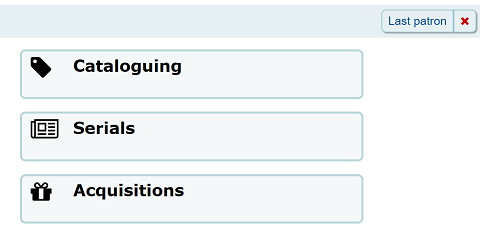
StaffDetailItemSelection
Asks: ___ item selection in record detail page.
Values:
- Disable
- Enable
Default: Enable
Description:
This preference lets you choose to show (or not show) checkboxes to the left of every item in the holdings tab on the detail display of a record in the staff interface. Showing these checkboxes allows staff members to select multiple items to edit or delete at once.
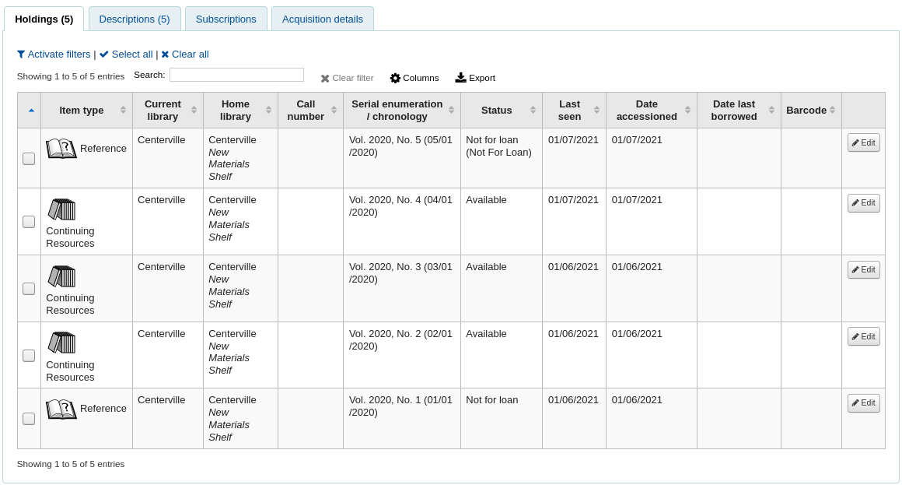
UseWYSIWYGinSystemPreferences
Asks: ___ WYSIWYG editor when editing certain HTML system preferences.
Values:
Don’t show
Show
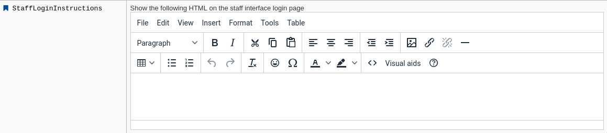
Default: Don’t show
Description:
- This preference allows you to change system preferences with HTML in them to WYSIWYG editors instead of plain text boxes.
viewISBD
Asks: ___ staff to view records in ISBD form on the staff interface.
Values:
- Allow
- Don’t allow
Default: Allow
Description:
This system preference shows or hides the ISBD tab in the detailed record view
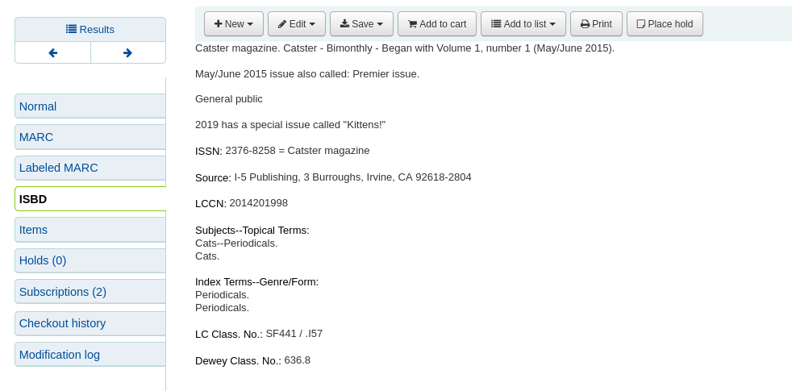
See also:
viewLabeledMARC
Asks: ___ staff to view records in labeled MARC form on the staff interface.
Values:
- Allow
- Don’t allow
Default: Allow
Description:
This system preference shows or hides the Labeled MARC tab in the detailed record view
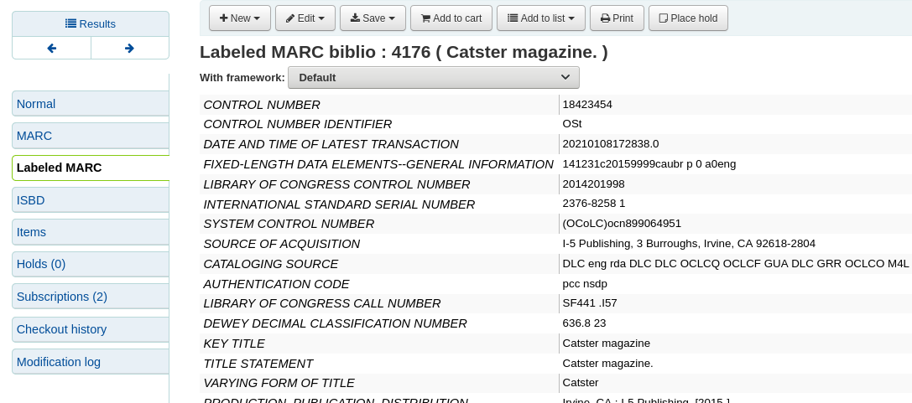
See also:
viewMARC
Asks: ___ staff to view records in plain MARC form on the staff interface.
Values:
- Allow
- Don’t allow
Default: Allow
Description:
This system preference shows or hides the MARC tab in the detailed record view
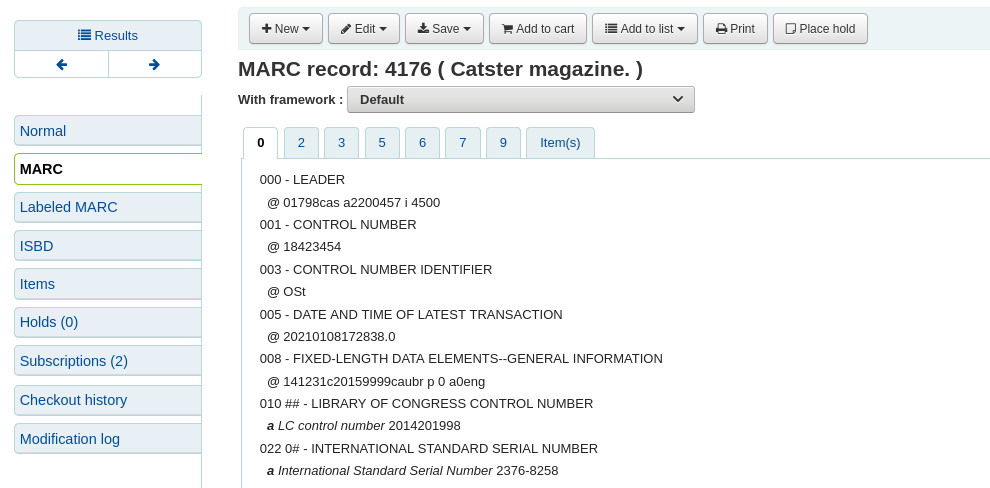
See also: